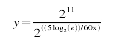

Linux Things
Table of Contents
- VM
- linux 下 强制回收内存
- The Linux Page Cache and pdflush
- Linux Kernel Route Cache
- Linux CPU Load
- Linux TCP Tuning
- Linux TCP/IP tuning for scalability
- Tuning Linux IPv4 route cache
- Generic ipv4 Setting
- Scheduling Jobs With cron on OpenWrt
- GFPKERNEL and GFPATOMIC
- BUG: scheduling while atomic: swapper /0x00000103/0, CPU#0
- view of the RAM in order to determinate the fragmentation
- VMware-Tools Fails To Start On Fedora
- NvidiaMultiMonitors
- Linux loglevel
- VirtualBox
- install Oracle VM VirtualBox Extension Pack
- eclipse提示框黑色背景色的修改方法
- swapper: page allocation failure
- IptablesHowTo
- Dos attack tools
VM
overcommit_ratio
Which happened to be 50. And the machine just happened to have about 5GB of RAM. Well look there, 5×50 is 250GB
If a process tries to malloc() more memory than available it will get an error right away. This mode is set by changing the sysctl value vm.overcommitmemory to 2.
vm.overcommit_ratio
vm.min_free_kbytes = 65536
This tells the kernel to try and keep 64MB of RAM free at all times. It’s useful in two main cases:
- Swap-less machines, where you don’t want incoming network traffic to overwhelm the kernel and force an OOM before it has time to flush any buffers.
- x86 machines, for the same reason: the x86 architecture only allows DMA transfers below approximately 900MB of RAM. So you can end up with the bizarre situation of an OOM error with tons of RAM free.
vm.min_free_kbytes < lowmem
vm.minfreekbytes 设定值高于LowTotal 值，系统认为没有足够的lowmem，而 触发OOM Killer，将进程强行杀掉。
系统中内存分为lowmem和highmem，其中lowmem为寻址内存，当lowmem耗尽时， 系统会触动OOM Killer将多余进程杀掉来释放内
vm.swappiness = 0
It’s said that altering swappiness can help you when you’re running under high memory pressure with software that tries to do its own memory management (i.e. MySQL). We’ve had limited success with this and I’d much prefer to use software which doesn’t pretend to know more about your hardware than the OS (i.e. PostgreSQL). Not that I’m bitter.
vm.overcommit_memory=1
The overcommitmemory sysctl isn’t something you’ll usually have to change if your software isn’t insane, but our netboot setup uses it so I thought I’d mention it. From the documentation:
- - Heuristic overcommit handling. Obvious overcommits of address space are refused. Used for a typical system. It ensures a seriously wild allocation fails while allowing overcommit to reduce swap usage. root is allowed to allocate slighly more memory in this mode. This is the default.
- - Always overcommit. Appropriate for some scientific applications.
- - Don’t overcommit. The total address space commit for the system is not permitted to exceed swap + a configurable percentage (default is 50) of physical RAM. Depending on the percentage you use, in most situations this means a process will not be killed while accessing pages but will receive errors on memory allocation as appropriate.
For more info on this, see the overcommit accounting documentation. https://www.kernel.org/doc/Documentation/sysctl/vm.txt
linux 下 强制回收内存
drop_caches
通过修改proc系统的dropcaches清理free的cache $echo 3 > /proc/sys/vm/dropcaches
dropcaches的详细文档如下： Writing to this will cause the kernel to drop clean caches, dentries and inodes from memory, causing that memory to become free.
To free pagecache: echo 1 > /proc/sys/vm/drop_caches To free dentries and inodes: echo 2 > /proc/sys/vm/drop_caches To free pagecache, dentries and inodes: echo 3 > /proc/sys/vm/drop_caches
As this is a non-destructive operation, and dirty objects are notfreeable, the user should run "sync" first in order to make sure allcached objects are freed. This tunable was added in 2.6.16.
vm in /etc/sysctl.conf
修改/etc/sysctl.conf 添加如下选项后就不会内存持续增加
vm.dirty_ratio = 1 vm.dirty_background_ratio=1 vm.dirty_writeback_centisecs=2 vm.dirty_expire_centisecs=3 vm.drop_caches=3 vm.swappiness =100 vm.vfs_cache_pressure=163 vm.overcommit_memory=2 vm.lowmem_reserve_ratio=32 32 8 kern.maxvnodes=3
上面的设置比较粗暴，使cache的作用基本无法发挥。需要根据机器的状况进行 适当的调节寻找最佳的折衷。
min_free_kbytesRegarding minfreekbytes, faster networking means kernel buffers get full faster and you need more headroom to be able to allocate them. You need to have enough to last until the vm manages to free up more memory, and at high transfer speeds you have high buffer filling speeds too. This will eat memory though, memory that will not be available for normal processes or file cache.
If you see stuff like "swapper: page allocation failure. order:0, mode:0x20" you definately need to increase minfreekbytes for the vm.
/proc/sys/vm/dirty_ratio这个参数控制文件系统的文件系统写缓冲区的大小，单位是百分比，表示系统内 存的百分比，表示当写缓冲使用到系统内存多少的时候，开始向磁盘写出数 据。 增大之会使用更多系统内存用于磁盘写缓冲，也可以极大提高系统的写性能。但 是，当你需要持续、恒定的写入场合时，应该降低其数值，一般启动上缺省是 10。设1加速程序速度
/proc/sys/vm/dirty_background_ratio这个参数控制文件系统的pdflush进程，在何时刷新磁盘。单位是百分比，表示 系统内存的百分比，意思是当写缓冲使用到系统内存多少的时 候，pdflush开始 向磁盘写出数据。增大之会使用更多系统内存用于磁盘写缓冲，也可以极大提高 系统的写性能。但是，当你需要持续、恒定的写入场合时， 应该降低其数值， 一般启动上缺省是 5
/proc/sys/vm/dirty_writeback_centisecs这个参数控制内核的脏数据刷新进程pdflush的运行间隔。单位是 1/100 秒。缺 省数值是500，也就是 5 秒。如果你的系统是持续地写入动作，那么实际上还是 降低这个数值比较好，这样可以把尖峰的写操作削平成多次写操
/proc/sys/vm/dirty_expire_centisecs这个参数声明Linux内核写缓冲区里面的数据多“旧”了之后，pdflush进程就开始 考虑写到磁盘中去。单位是 1/100秒。缺省是 30000，也就是 30 秒的数据就算 旧了，将会刷新磁盘。对于特别重载的写操作来说，这个值适当缩小也是好的， 但也不能缩小太多，因为缩小太多也会导致IO提高太快。建议设置为 1500，也 就是15秒算旧。
/proc/sys/vm/drop_caches释放已经使用的cache
/proc/sys/vm/page-cluster该文件表示在写一次到swap区的时候写入的页面数量，0表示1页，1表示2页，2 表示4页。
- /proc/sys/vm/swapiness
该文件表示系统进行交换行为的程度，数值（0-100）越高，越可能发生磁盘交换。
/proc/sys/vm/vfs_cache_pressure该文件表示内核回收用于directory和inode cache内存的倾向
more soft configuration in /etc/sysctl.conf
/etc/sysctl.conf vm.dirty_ratio=1 vm.dirty_background_ratio=1 vm.dirty_writeback_centisecs=1 vm.dirty_expire_centisecs=3 vm.drop_caches=3 vm.swapiness=100 vm.vfs_cache_pressure=133 vm.dirty_ratio = 5 #dft 20 % vm.dirty_background_ratio =5 #dft 10 % vm.dirty_writeback_centisecs=100 #dft 500 is 5s vm.dirty_expire_centisecs=300 #dft 30000 is 30s vm.drop_caches=3 #dft 0 vm.swappiness=100 #dft 60 vm.vfs_cache_pressure=133 #dft 100 vm.min_free_kbytes=204800 #200M mem save simple sysctl -w net.ipv4.route.flush=1
The Linux Page Cache and pdflush1
Linux usually writes data out of the page cache using a process called
pdflush. At any moment, between 2 and 8 pdflush threads are running on
the system. You can monitor how many are active by looking at
/proc/sys/vm/nr_pdflush_threads.
pdflush tunables
/proc/sys/vm/dirty_writeback_centisecs(default 500): In hundredths of a second, this is how often pdflush wakes up to write data to disk. The default wakes up the two (or more) active threads every five seconds.
/proc/sys/vm/dirty_writeback_centisecs(default 3000): In hundredths of a second, how long data can be in the page cache before it's considered expired and must be written at the next opportunity. Note that this default is very long: a full 30 seconds.
/proc/sys/vm/dirty_background_ratio(default 10): Maximum percentage of active that can be filled with dirty pages before pdflush begins to write them
Most of the documentation you'll find about this parameter suggests it's in terms of total memory, but a look at the source code shows this isn't true. In terms of the meminfo output, the code actually looks at
MemFree + Cached - MappedMemTotal: 3950112 kB MemFree: 622560 kB Cached: 2901484 kB Mapped: 999852 kB
So on the system above, where this figure gives 2.5GB, with the default of 10% the system actually begins writing when the total for Dirty pages is slightly less than 250MB–not the 400MB you'd expect based on the total memory figure.
Summary: when does pdflush write?
In the default configuration, then, data written to disk will sit in memory until either a) they're more than 30 seconds old, or b) thedirty pages have consumed more than 10% of the active, working memory.
Process page writes
/proc/sys/vm/dirtyratio (default 40): Maximum percentage of total memory that can be filled with dirty pages before processes are forced to write dirty buffers themselves during their time slice instead of being allowed to do more writes.
Kernel Korner: I/O Schedulers: http://www.linuxjournal.com/article/6931
Tuning Recommendations for write-heavy operations
- dirtybackgroundratio: Primary tunable to adjust, probably downward. If your goal is to reduce the amount of data Linux keeps cached in memory, so that it writes it more consistently to the disk rather than in a batch, lowering dirtybackgroundratio is the most effective way to do that.
- dirtyratio: Secondary tunable to adjust only for some workloads. Applications that can cope with their writes being blocked altogether might benefit from substantially lowering this value.
- dirtyexpirecentisecs: Test lowering, but not to extremely low levels. Attempting to speed how long pages sit dirty in memory can be accomplished here, but this will considerably slow average I/O speed because of how much less efficient this is. This is particularly true on systems with slow physical I/O to disk.
- dirtywritebackcentisecs: Leave alone. The timing of pdflush threads set by this parameter is so complicated by rules in the kernel code for things like write congestion that adjusting this tunable is unlikely to cause any real effect.
Swapping
By default, Linux will aggressively swap processes out of physical
memory onto disk in order to keep the disk cache as large as possible.
This means that pages that haven't been used recently will be pushed
into swap long before the system even comes close to running out of
memory, which is an unexpected behavior compared to some operating
systems. The /proc/sys/vm/swappiness parameter controls how
aggressive Linux is in this area.
References: page cache
- Neil Horman, "Understanding Virtual Memory in Red Hat Enterprise Linux 4" http://people.redhat.com/nhorman/papers/rhel4_vm.pdf
- Daniel P. Bovet and Marco Cesati, "Understanding the Linux Kernel, 3rd edition", chapter 15 "The Page Cache". Available on the web at http://www.linux-security.cn/ebooks/ulk3-html/
- Robert Love, "Linux Kernel Development, 2nd edition", chapter 15 "The Page Cache and Page Writeback"
- "Runtime Memory Management", http://tree.celinuxforum.org/CelfPubWiki/RuntimeMemoryMeasurement
- "Red Hat Enterprise Linux-Specific [Memory] Information", http://www.redhat.com/docs/manuals/enterprise/RHEL-4-Manual/admin-guide/s1-memory-rhlspec.html
- "Tuning Swapiness", http://kerneltrap.org/node/3000
- "FAQ Linux Memory Management", http://gentoo-wiki.com/FAQ_Linux_Memory_Management
- From the Linux kernel tree:
- Documentation/filesystems/proc.txt (the meminfo documentation there originally from http://lwn.net/Articles/28345/)
- Documentation/sysctl/vm.txt
- Mm/page-writeback.c
References: I/O scheduling
- While not directly addressed here, the I/O scheduling algorithms in Linux actually handle the writes themselves, and some knowledge or tuning of them may be synergistic with adjusting the parameters here. Adjusting the scheduler only makes sense in the context where you've already configured the page cache flushing correctly for your workload.
- D. John Shakshober, "Choosing an I/O Scheduler for Red Hat Enterprise Linux 4 and the 2.6 Kernel" http://www.redhat.com/magazine/008jun05/features/schedulers/
- Robert Love, "Kernel Korner: I/O Schedulers", http://www.linuxjournal.com/article/6931
- Seelam, Romero, and Teller, "Enhancements to Linux I/O Scheduling", http://linux.inet.hr/files/ols2005/seelam-reprint.pdf
- Heger, D., Pratt, S., "Workload Dependent Performance Evaluation of the Linux 2.6 I/O Schedulers", http://linux.inet.hr/files/ols2004/pratt-reprint.pdf
Linux Kernel Route Cache
To display the “Route Cache”, one could simply issue the “ip route
show cache” command.
[ kernel network subsystem ] —-> Route Cache || [ If no match ] —-> RPDB || [ If no match ] —-> Route Table
When the routing subsystem of the kernel is initialized, an exec of
iprtinit is initiated
(source: linux/net/ipv4/ip_output.c)
void __init ip_init(void) { ip_rt_init(); inet_initpeers(); #if defined(CONFIG_IP_MULTICAST) && defined(CONFIG_PROC_FS) igmp_mc_proc_init(); #endif }
Part of iprtinit is to allocate the memory set to be used to cache the network routes but also to initialize global variables such as rthashtable and rthashrnd and many others.
You can view the details of the iprtinit function in /net/ipv4/route.c
rthashtable defines a hash table of the route cache with rthashmask holding its size. An easy way to check the size of the routing cache table is to look in dmesg, by grepping “IP route”
aabbas@mig:~$ dmesg |grep “IP route” [ 1.814492] IP route cache hash table entries: 262144 (order: 9,2097152 bytes)
The max size of the route cache is configurable through /proc/sys/net/ipv4/route/maxsize. furthermore to prevent the size of the hash to exceed the maxsize, the kernel makes use of a garbage collector gctresh
When an interface goes down/up or a new changes take place which would
affect the routing cache, the kernel executes rtcacheflush which in
returns executes rtrunflush. Many events such as IP removal, removal
of interfaces etc… trigger the route cache to be flushed, however keep
in mind, that periodically it will be flushed based on the value of
rtsecrettimer. The time value is configurable in
/proc/sys/net/ipv4/route/secret_interval.
To trigger a route cache flush, issue
echo -1 > /proc/sys/net/ipv4/route/flush or ip route flush cache
iprtmindelay and iprtmaxdelay define the time within which the flush would occur, setting the iprtmindelay value to 0 would immediately ensure that the cache is flushed when rtrunflush is triggered.
Linux CPU Load
Load Average is caused by two things
- Cpu it self is busy/overloaded in processing things
- Processes (typically called Blocking process) in run queue, waiting for I/O
In fact, it is precisely the CPU load that is measured, because load averages do not include any processes or threads waiting on I/O, networking, databases or anything else not demanding the CPU. It narrowly focuses on what is actively demanding CPU time. This differs greatly from the CPU percentage. The CPU percentage is the amount of a time interval (that is, the sampling interval) that the system's processes were found to be active on the CPU. 2
The load averages differ from CPU percentage in two significant ways: 1) load averages measure the trend in CPU utilization not only an instantaneous snapshot, as does percentage, and 2) load averages include all demand for the CPU not only how much was active at the time of measurement.
Calculate the load 2
When the quantum timer pops, timer.c is entered at a function in the kernel called timer.c:dotimer(). Here, all interrupts are disabled so the code is not working with moving targets. The jiffies counter is incremented by 1, and the load-average calculation is checked to see if it should be computed.
The calculation code uses the HZ value to determine the calculation frequency. Specifically, the timer.c:calcload() function will run the averaging algorithm every 5 * HZ, or roughly every five seconds.
unsigned long avenrun[3]; static inline void calc_load(unsigned long ticks) { unsigned long active_tasks; /* fixed-point */ static int count = LOAD_FREQ; count -= ticks; if (count < 0) { count += LOAD_FREQ; active_tasks = count_active_tasks(); CALC_LOAD(avenrun[0], EXP_1, active_tasks); CALC_LOAD(avenrun[1], EXP_5, active_tasks); CALC_LOAD(avenrun[2], EXP_15, active_tasks); } } extern unsigned long avenrun[]; /* Load averages */ #define FSHIFT 11 /* nr of bits of precision */ #define FIXED_1 (1<<FSHIFT) /* 1.0 as fixed-point */ #define LOAD_FREQ (5*HZ) /* 5 sec intervals */ #define EXP_1 1884 /* 1/exp(5sec/1min) as fixed-point */ #define EXP_5 2014 /* 1/exp(5sec/5min) */ #define EXP_15 2037 /* 1/exp(5sec/15min) */ #define CALC_LOAD(load,exp,n) \ load *= exp; \ load += n*(FIXED_1-exp); \ load >>= FSHIFT;
The calc_load() function is called by update_times(), also found in
timer.c, and is the code responsible for supplying the calcload()
function with the ticks parameter.
The macro takes in three parameters: the load-average bucket (one of
the three elements in avenrun[]), a constant exponent and the number
of running/uninterruptible processes currently on the run queue. The
possible exponent constants are listed above: EXP_1 for the 1-minute
average, EXP_5 for the 5-minute average and EXP_15 for the 15-minute
average. The important point to notice is that the value decreases
with age. The constants are magic numbers that are calculated by the
mathematical function shown below:

When x=1, then y=1884; when x=5, then y=2014; and when x=15, then
y=2037. The purpose of the magical numbers is that it allows the
CALC_LOAD macro to use precision fixed-point representation of
fractions. The magic numbers are then nothing more than multipliers
used against the running load average to make it a moving average.
(The mathematics of fixed-point representation)
To diagnose which process causing this just run a command
ps faux and look ‘D’ under 8th column STAT one. There may be lots of R and S as well. D —> Waiting for either (CPU, Disk I/O, Network I/O) R —-> Running S —–> Sleeping ps axo stat,pid | grep D to find the process with stat D
top or uptime
load average: 0.09, 0.05, 0.01
the three numbers represent averages over progressively longer periods of time (one, five, and fifteen minute averages)
On multi-processor system, the load is relative to the number of processor cores available. The "100% utilization" mark is 1.00 on a single-core system, 2.00, on a dual-core, 4.00 on a quad-core, etc.
how many cores my system has
grep 'model name' /proc/cpuinfo | wc -l
Monitoring Linux CPU Load with Scout
Linux TCP Tuning
How to achieve Gigabit speeds with Linux
- 3.1 if txtqueue length high
There are two queues to consider, the txqueuelen; which is related to the transmit queue size, and the netdevbacklog; which determines the recv queue size.
To set the length of the transmit queue of the device. It is useful to set this to small values for slower devices with a high latency (modem links, ISDN) to prevent fast bulk transfers from disturbing interactive traffic like telnet too much.
Users can manually set this queue size using the ifconfig command on the required device. Eg.
/sbin/ifconfig eth2 txqueuelen 2000
The default of 100 is inadequate for long distance, high throughput pipes. For example, on a network with a rtt of 120ms and at Gig rates, a txqueuelen of at least 10000 is recommended.
- kernel receiver backlog
For the receiver side, we have a similar queue for incoming packets. This queue will build up in size when an interface receives packets faster than the kernel can process them. If this queue is too small (default is 300), we will begin to loose packets at the receiver, rather than on the network. One can set this value by: /sbin/sysctl -w sys.net.core.netdevmaxbacklog=2000
- socket buffer memory queue limits r|w mem (default and max)
If your program asks for more socket buffer memory than the kernel is configured to give you, the program won't get it. You can adjust the maximum value of socket buffer memory by: /sbin/sysctl -w net.core.rmemmax= VALUE
Where VALUE should enough for your socket buffer size.
you should also set the "write" value.
/sbin/sysctl -w net.core.wmemmax= VALUE
/sbin/sysctl -w net.ipv4.tcpmem= MIN DEFAULT MAX
This should be done both in the sender and the receiver.
- autotuning in 2.4 kernels
If you don't set the socket buffer options in your program, linux will attempt to auto-tune your tcp connection. This means that it will allocate as less memory as possible for your TCP connection without wasting memory whilst maintaining high performance. /sbin/sysctl -w net.ipv4.tcprmem= MIN DEFAULT MAX
/sbin/sysctl -w net.ipv4.tcpwmem= MIN DEFAULT MAX
Linux TCP Tuning
- To increase TCP max buffer size setable using setsockopt():
net.core.rmemmax = 33554432 net.core.wmemmax = 33554432
- To increase Linux autotuning TCP buffer limits min, default, and max number of bytes to use set max to 16MB for 1GE, and 32M or 54M for 10GE:
net.ipv4.tcprmem = 4096 87380 33554432 net.ipv4.tcpwmem = 4096 65536 33554432
- txqueuelen
Another thing you can to help increase TCP throughput with 1000BT NICs is to increase the size of the interface queue. For paths with more than 50 ms RTT, a value of 5000-10000 is recommended. To increase txqueuelen, do the following:
[root@server1 ~] ifconfig eth0 txqueuelen 5000
Effect of TxqueueLen on High Bandwidth Delay Product Network
high speed tuning
Increase TCP performance for gigabit network
- TCP performance tuning - how to tune linux
The short summary: The default Linux tcp window sizing parameters sucks. The short fix [wirespeed for gigE within 5 ms RTT and fastE within 50 ms RTT]: vim /etc/sysctl.conf net/core/rmemmax = 8738000 net/core/wmemmax = 6553600 net/ipv4/tcprmem = 8192 873800 8738000 net/ipv4/tcpwmem = 4096 655360 6553600
It might also be a good idea to increase vm/minfreekbytes, especially if you have e1000 with NAPI or similar. A sensible value is 16M or 64M: vm/minfreekbytes = 65536 If you run an ancient kernel, increase the txqueuelen to at least 1000: ifconfig ethN txqueuelen 1000
If you are seeing "TCP: drop open request" for real load (not a DDoS), you need to increase tcpmaxsynbacklog (8192 worked much better than 1024 on heavy webserver load).
- The background:
TCP performance is limited by latency and window size (and overhead, which reduces the effective window size) by windowsize/RTT (this is how much data that can be "in transit" over the link at any given moment).
To get the actual transfer speeds possible you have to divide the resulting window by the latency (in seconds):
The overhead is: window/2tcpadvwinscale (tcpadvwinscale default is 2)
So for linux default parameters for the recieve window (tcprmem): 87380 - (87380 / 22) = 65536.
Given a transatlantic link (150 ms RTT), the maximum performance ends up at: 65536/0.150 = 436906 bytes/s or about 400 kbyte/s, which is really slow today.
With the increased default size: (873800 - 873800/22)/0.150 = 4369000 bytes/s, or about 4Mbytes/s, which is resonable for a modern network. And note that this is the default, if the sender is configured with a larger window size it will happily scale up to 10 times this (8738000*0.75/0.150 = ~40Mbytes/s), pretty good for a modern network.
For the txqueuelen, this is mostly relevant for gigE, but should not hurt anything else. Old kernels have shipped with a default txqueuelen of 100, which is definately too low and hurts performance.
net/core/[rw]memmax is in bytes, and the largest possible window size. net/ipv4/tcp[rw]mem is in bytes and is "min default max" for the tcp windows, this is negotiated between both sender and reciever. "r" is for when this machine is on the recieving end, "w" when the connection is initiated from this machine.
There are more tuning parameters, for the Linux kernel they are documented in Documentation/networking/ip-sysctl.txt, but in our experience only the parameters above need tuning to get good tcp performance..
Linux Tune Network Stack (Buffers Size) To Increase Networking Performance
Linux TCP/IP tuning for scalability
Tuning Linux IPv4 route cache
http://vincent.bernat.im/en/blog/2011-ipv4-route-cache-linux.html
When tuning the route cache, rhash_entries,
net.ipv4.route.gc_elasticity, net.ipv4.route.max_size and
net.ipv4.route.gc_threshold are related and should not be modified
independently. net.ipv4.route.gc_thresh should be below the product of
net.ipv4.route.gc_elasticity and rhash_entries while
net.ipv4.route.max_size should be above this value.
Generic ipv4 Setting
net.ipv4.route.flush
Writing to this file results in a flush of the routing cache.
Scheduling Jobs With cron on OpenWrt 3
#1. Create crontab Directory mkdir /etc/crontabs #2. Create crontab File touch /etc/crontabs/root #3. Create Init Script /etc/init.d/S60cron #!/bin/sh # start crond /usr/sbin/crond -c /etc/crontabs -L /dev/null #4. make the script executable: chmod 755 /etc/init.d/S60cron #5. add an entry to /etc/crontabs/root for each task that you want periodically executed. # run this script every hour 01 * * * * /path/scriptname > /dev/null The time and date fields are: field allowed values ----- -------------- minute 0-59 hour 0-23 day of month 1-31 month 1-12 (or names, see below) day of week 0-7 (0 or 7 is Sun, or use names) everytime use */1
GFPKERNEL and GFPATOMIC
GFPATOMIC is used when (a) you are inside a completion handler, an interrupt, bottom half, tasklet or timer, or (b) you are holding a spinlock or rwlock (does not apply to semaphores), or (c) current->state != TASKRUNNING, this is the case only after you've changed it.
Changed to GPFATOMIC and syslog is quiet!!!
BUG: scheduling while atomic: swapper /0x00000103/0, CPU#0
"Scheduling while atomic" indicates that you've tried to sleep somewhere that you shouldn't - like within a spinlock-protected critical section or an interrupt handler.
Exactly as said in 1st answer , scheduling while atomic happen when the scheduler get confused and therfore unable to work properly and this because the scheduler tried to perform a "schedule()" in a section that contains a schedulable code inside of a non schedulable one . for example using sleeps inside of a section protected by a spinlock. trying to use another lock(semaphores,mutexes..) inside of a spinlock-proteced code may also disturb the scheduler. In addition using spinlocks in user space can drive the scheduler to beahve as such. hope this helps
view of the RAM in order to determinate the fragmentation
#+beignsrc sh echo m > /proc/sysrq-trigger #If memory information was not dumped to /var/log/messages, echo 1 > /proc/sys/kernel/sysrq
cat /proc/buddyinfo #+endsrc
VMware-Tools Fails To Start On Fedora
blocking file system failed
sudo yum install fuse-libs
NvidiaMultiMonitors4
intro
You can check your video card model by running, from terminal:
lspci | grep VGA
More information can be provided by running
sudo lshw -C video
Setup
After the system reboot, you can change your X settings by going to System->Administration->NVIDIA X Server Settings. If you installed the driver manually, it may be under Applications->System Tools->NVIDIA X Server Settings. Alternatively, run from terminal:
gksudo nvidia-settings
If the driver didn't install this (Envy/EnvyNG surely does), you can install it manually with
sudo apt-get install nvidia-settings
- Differences
- TwinView
one large screen shared between two monitors in Compiz-Fusion, it makes the "cube" appear as one large octagon Separate X screen
- separate X screens, one on each monitor
allows your window manager (Metacity, XFWM, Compiz, etc.) to be aware that there are two screens in Compiz-Fusion, each monitor has its own cube, controlled separately
Saving
I prefer to uncheck Merge with existing file. Now click Save. If it gives you an error, "Unable to remove old X config backup file '/etc/X11/xorg.conf.backup' then click OK and open the save dialog again. Click Show preview…, select all and copy. Now open a terminal and run
=gksudo gedit /etc/X11/xorg.conf Delete the current contents of this file and paste what is in the preview. Save and close.
Removing Restricted Drivers
sudo apt-get remove --purge nvidia-glx-new
Linux loglevel
改变console loglevel的方法有如下几种： 1.启动时Kernel boot option：loglevel=level 2.运行时Runtime: dmesg -n level （注意：demsg -n level 改变的是console上的loglevel，dmesg命令仍然会打印出所有级别的系统信息。） 3.运行时Runtime: echo $level > /proc/sys/kernel/printk 4.运行时Runtime:写程序使用syslog系统调用（可以man syslog）
The kernel log levels are:
0 (KERN_EMERG) The system is unusable. 1 (KERN_ALERT) Actions that must be taken care of immediately. 2 (KERN_CRIT) Critical conditions. 3 (KERN_ERR) Noncritical error conditions. 4 (KERN_WARNING) Warning conditions that should be taken care of. 5 (KERN_NOTICE) Normal, but significant events. 6 (KERN_INFO) Informational messages that require no action. 7 (KERN_DEBUG) Kernel debugging messages, output by the kernel if the developer enabled debugging at compile time.
cat /proc/sys/kernel/printk
cat /proc/sys/kernel/printk 4 4 1 7 所得到的信息是$Linux_SRC/include/linux/printk.h中定义的宏： #define console_loglevel (console_printk[0]) #define default_message_loglevel (console_printk[1]) #define minimum_console_loglevel (console_printk[2]) #define default_console_loglevel (console_printk[3]) 依次分别为： 控制台日志级别：优先级高于该值的消息将被打印至控制台 缺省的消息日志级别：将用该优先级来打印没有优先级的消息 最低的控制台日志级别：控制台日志级别可被设置的最小值（最高优先级） 缺省的控制台日志级别：控制台日志级别的缺省值
VirtualBox
Virtual Box - Failed to access the USB subsystem
sudo usermod -a -G vboxusers username
Failed to access the USB subsystem.
Failed to access the USB subsystem. Could not load the Host USB Proxy service: VERRDISKFULL.
sudo VBoxManage extpack uninstall "Oracle VM VirtualBox Extension Pack" sudo VBoxManage extpack install Oracle_VM_VirtualBox_Extension_Pack-xxxxvbox-extpack #download from oracle
If do not resolve this issue, more:http://phobosk.wordpress.com/2012/11/11/howto-fix-a-virtualbox-failed-to-access-the-usb-subsystem-error/
install Oracle VM VirtualBox Extension Pack
eclipse提示框黑色背景色的修改方法
cd /usr/share/themes/Radiance
sudo gedit gtk-2.0/gtkrc
tooltip_fg_color:#ffffff
tooltip_bg_color:#000000
==>
tooltip_fg_color:#000000
tooltip_bg_color:#f2edbc
打开系统外观配置，切换一下主题，当切换回来的时候，修改的效果就生效了。
swapper: page allocation failure
#change value for this boot sysctl -w vm.min_free_kbytes=xxxx #change value for subsequent boots echo "vm.min_free_kbytes=xxxx" >> /etc/sysctl.conf
This tells the kernel to try and keep 64MB of RAM free at all times. It’s useful in two main cases:
- Swap-less machines, where you don’t want incoming network traffic to overwhelm the kernel and force an OOM before it has time to flush any buffers.
- x86 machines, for the same reason: the x86 architecture only allows DMA transfers below approximately 900MB of RAM. So you can end up with the bizarre situation of an OOM error with tons of RAM free.
IptablesHowTo
Dos attack tools5
Low Orbit Ion Cannon
THC-SSL-DOS
Distributed Denial of Service (DDoS) Attacks/tools
Denial of Service Basics
advanced firewall and DDoS utilities
- APF: Advanced Policy Firewall: http://www.rfxn.com/
- BFD: Brute Force Detection: http://www.rfxn.com/
- DDoS: DDoS Deflate: http://deflate.medialayer.com/
- Rootkit: Spy and Junkware detection and removal tool: http://www.rootkit.nl/projects/rootkit_hunter.html